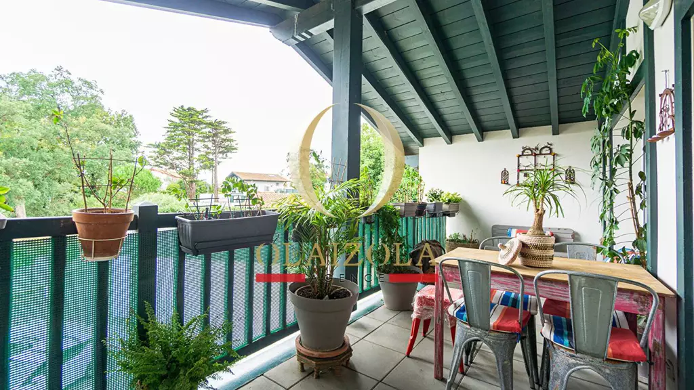
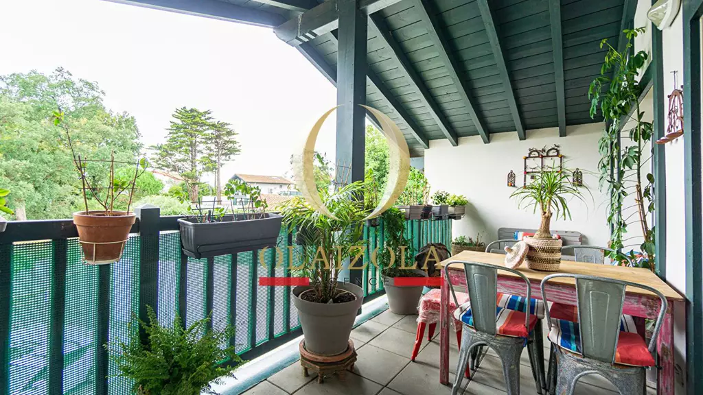

Appartement T1 bis à Bidart

Situé au deuxième et dernier étage d'une résidence récente et sécurisée, cet appartement T1bis d'environ 31 m² loi Carrez (environ 39 m² au sol) bénéficie d'un emplacement privilégié à Bidart, à seulement 600 mètres de la plage du Pavillon Royal et à 300 mètres des commerces. Idéalement exposé plein sud, il offre une luminosité exceptionnelle grâce à ses deux grandes baies vitrées ouvrant sur une vaste terrasse de 13,4 m², véritable prolongement du séjour.
Dès l'entrée, vous découvrirez une belle pièce de vie de près de 25 m² avec cuisine américaine aménagée et équipée, parfaitement agencée pour un confort de vie optimal. L'espace nuit en mezzanine accueille une chambre mansardée, et une grande salle d'eau avec double vasque complète l'ensemble. L'appartement est astucieusement équipé en rangements, avec de nombreux placards intégrés et un grand dressing, rendant le bien parfaitement adapté à une vie à l'année.
En bon état général, avec menuiseries en PVC double vitrage, volets roulants électriques, chauffage individuel au gaz (chaudière Chaffoteaux), cet appartement dispose également d'un garage fermé de 14 m² et d'un accès sécurisé aux places visiteurs dans la résidence. L'immeuble est équipé d'un ascenseur, d'un interphone, d'un digicode et d'un visiophone. L'ensemble de la copropriété (95 lots dont 39 d'habitation) est bien entretenu, sans procédure en cours. Avec les lignes de bus à proximité immédiate, vous rejoindrez facilement Biarritz, Bayonne ou Hendaye.
Notre agence vous accueille téléphoniquement du lundi au samedi, de 8h à 19h, afin de répondre à toutes vos questions et de vous accompagner dans vos projets immobiliers. N'hésitez pas à nous contacter pour obtenir des informations personnalisées et un suivi attentif de vos démarches.


 
